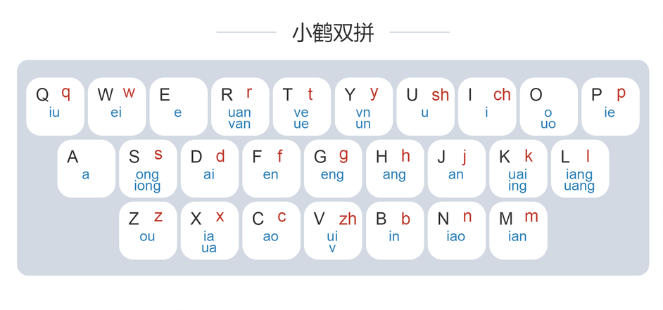
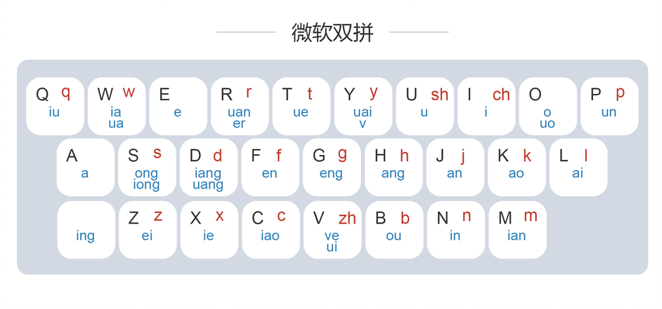

本次的主题呢，主要是想聊聊打字。
几个月前，我初次接触双拼。以前以为双拼就是打词语的，打词语的时候只需要输入两个字母即可，例如bb代表着‘’宝贝“，”爸爸“等词语，但其实完全不是。
双拼其实就代表着所有的字只需要输入两个字母就可打出来，比如：“牛”字双拼只需要输入nq，而不是去按niu，“亮”字只需要输入ll，而不需要按liang，这就大大地减少了按键所需要的次数，从而大大地提高了打字的效率。
双拼的机制就是在每一个键位再加上一个或多个音节，从而使得一个键位可以代替好几个键位才能打出来的音节，看下图：

这张键位图是较为流行的小鹤双拼。不同的双拼方案音节排布不同，例如微软双拼的键位如下图。

到底哪种双拼方案适合你，就看你能背得下来哪种键位了。所以说，要想打得快，键位得记得牢。目前我已经使用小鹤双拼一个多月了，基本上一周就能记下来，手机电脑都是使用的双拼。手机用双拼别提有多方便，我想打几个字点击的次数一定在字数的两倍之下，稍点几下一行字就可轻松打出来。如果是全拼的话，一顿操作，疯狂点击可能也不过如此。因此双拼的优势就不言而喻了。
当然，要想熟练双拼是不容易的，尤其是前期会让你抓狂，自己在打什么都不知道，哈哈哈。不过熟练之后会从容很多的。